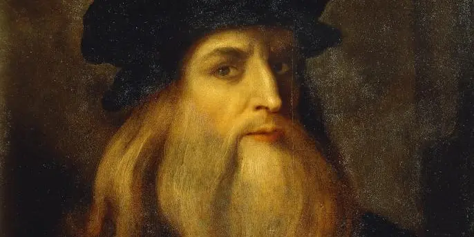
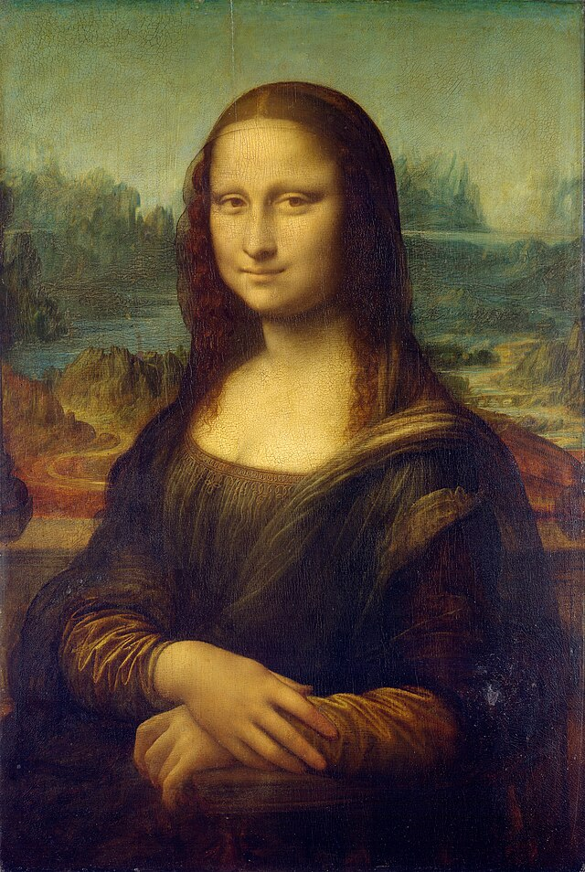

Da Vinci was born in Anchiano, Tuscany (now Italy), in 1452, close to the town of Vinci that provided the surname we associate with him today. In his own time he was known just as Leonardo or as “Il Florentine,” since he lived near Florence—and was famed as an artist, inventor and thinker.
Did you know? Leonardo da Vinci’s father, an attorney and notary, and his peasant mother were never married to one another, and Leonardo was the only child they had together. With other partners, they had a total of 17 other children, da Vinci’s half-siblings.Da Vinci’s parents weren’t married, and his mother, Caterina, a peasant, wed another man while da Vinci was very young and began a new family. Beginning around age 5, he lived on the estate in Vinci that belonged to the family of his father, Ser Peiro, an attorney and notary. Da Vinci’s uncle, who had a particular appreciation for nature that da Vinci grew to share, also helped raise him.
Da Vinci received no formal education beyond basic reading, writing and math, but his father appreciated his artistic talent and apprenticed him at around age 15 to the noted sculptor and painter Andrea del Verrocchio of Florence. For about a decade, da Vinci refined his painting and sculpting techniques and trained in mechanical arts.
When he was 20, in 1472, the painters’ guild of Florence offered da Vinci membership, but he remained with Verrocchio until he became an independent master in 1478. Around 1482, he began to paint his first commissioned work, The Adoration of the Magi, for Florence’s San Donato, a Scopeto monastery.
However, da Vinci never completed that piece, because shortly thereafter he relocated to Milan to work for the ruling Sforza clan, serving as an engineer, painter, architect, designer of court festivals and, most notably, a sculptor.
The family asked da Vinci to create a magnificent 16-foot-tall equestrian statue, in bronze, to honor dynasty founder Francesco Sforza. Da Vinci worked on the project on and off for 12 years, and in 1493 a clay model was ready to display. Imminent war, however, meant repurposing the bronze earmarked for the sculpture into cannons, and the clay model was destroyed in the conflict after the ruling Sforza duke fell from power in 1499.
Although relatively few of da Vinci’s paintings and sculptures survive—in part because his total output was quite small—two of his extant works are among the world’s most well-known and admired paintings.
The first is da Vinci’s “The Last Supper,” painted during his time in Milan, from about 1495 to 1498. A tempera and oil mural on plaster, “The Last Supper” was created for the refectory of the city’s Monastery of Santa Maria delle Grazie. Also known as “The Cenacle,” this work measures about 15 by 29 feet and is the artist’s only surviving fresco. It depicts the Passover dinner during which Jesus Christ addresses the Apostles and says, “One of you shall betray me.”
One of the painting’s stellar features is each Apostle’s distinct emotive expression and body language. Its composition, in which Jesus is centered among yet isolated from the Apostles, has influenced generations of painters.

When Milan was invaded by the French in 1499 and the Sforza family fled, da Vinci escaped as well, possibly first to Venice and then to Florence. There, he painted a series of portraits that included “La Gioconda,” a 21-by-31-inch work that’s best known today as “Mona Lisa.” Painted between approximately 1503 and 1506, the woman depicted—especially because of her mysterious slight smile—has been the subject of speculation for centuries.
In the past she was often thought to be Mona Lisa Gherardini, a courtesan, but current scholarship indicates that she was Lisa del Giocondo, wife of Florentine merchant Francisco del Giocondo. Today, the portrait—the only da Vinci portrait from this period that survives—is housed at the Louvre Museum in Paris, France, where it attracts millions of visitors each year.
Around 1506, da Vinci returned to Milan, along with a group of his students and disciples, including young aristocrat Francesco Melzi, who would be Leonardo’s closest companion until the artist’s death. Ironically, the victor over the Duke Ludovico Sforza, Gian Giacomo Trivulzio, commissioned da Vinci to sculpt his grand equestrian-statue tomb. It, too, was never completed (this time because Trivulzio scaled back his plan). Da Vinci spent seven years in Milan, followed by three more in Rome after Milan once again became inhospitable because of political strife.
Da Vinci’s interests ranged far beyond fine art. He studied nature, mechanics, anatomy, physics, architecture, weaponry and more, often creating accurate, workable designs for machines like the bicycle, helicopter, submarine and military tank that would not come to fruition for centuries. He was, wrote Sigmund Freud, “like a man who awoke too early in the darkness, while the others were all still asleep.”
Several themes could be said to unite da Vinci’s eclectic interests. Most notably, he believed that sight was mankind’s most important sense and that “saper vedere” (“knowing how to see”) was crucial to living all aspects of life fully. He saw science and art as complementary rather than distinct disciplines, and thought that ideas formulated in one realm could—and should—inform the other.
BProbably because of his abundance of diverse interests, da Vinci failed to complete a significant number of his paintings and projects. He spent a great deal of time immersing himself in nature, testing scientific laws, dissecting bodies (human and animal) and thinking and writing about his observations.
At some point in the early 1490s, da Vinci began filling notebooks related to four broad themes—painting, architecture, mechanics and human anatomy—creating thousands of pages of neatly drawn illustrations and densely penned commentary, some of which (thanks to left-handed “mirror script”) was indecipherable to others.
The notebooks—often referred to as da Vinci’s manuscripts and “codices”—are housed today in museum collections after having been scattered after his death. The Codex Atlanticus, for instance, includes a plan for a 65-foot mechanical bat, essentially a flying machine based on the physiology of the bat and on the principles of aeronautics and physics.
Other notebooks contained da Vinci’s anatomical studies of the human skeleton, muscles, brain, and digestive and reproductive systems, which brought new understanding of the human body to a wider audience. However, because they weren’t published in the 1500s, da Vinci’s notebooks had little influence on scientific advancement in the Renaissance period.
Da Vinci left Italy for good in 1516, when French ruler Francis I generously offered him the title of “Premier Painter and Engineer and Architect to the King,” which afforded him the opportunity to paint and draw at his leisure while living in a country manor house, the Château of Cloux, near Amboise in France.
Although accompanied by Melzi, to whom he would leave his estate, the bitter tone in drafts of some of his correspondence from this period indicate that da Vinci’s final years may not have been very happy ones. (Melzi would go on to marry and have a son, whose heirs, upon his death, sold da Vinci’s estate.)
Da Vinci died at Cloux (now Clos-Lucé) in 1519 at age 67. He was buried nearby in the palace church of Saint-Florentin. The French Revolution nearly obliterated the church, and its remains were completely demolished in the early 1800s, making it impossible to identify da Vinci’s exact gravesite.